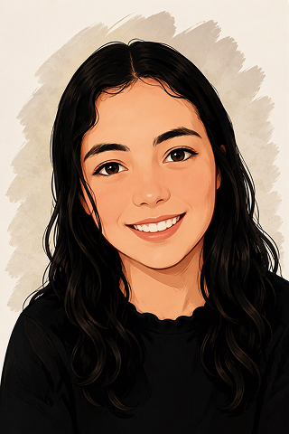
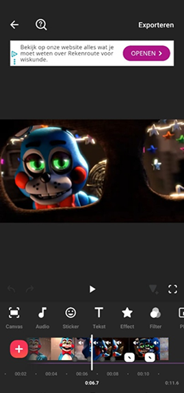

Over mij als student UX/UI-designer
Hallo, ik ben Sarah.
Ik ben studente Digital Experience Design aan Thomas More in Mechelen. Wat mij aanspreekt in digital design is de combinatie van creativiteit en technologie, maar vooral de mogelijkheid om met design echte problemen voor gebruikers op te lossen.
Hoe ik werk als UX-designer
Wanneer ik aan een nieuw project begin, probeer ik eerst te begrijpen voor wie ik ontwerp en wat die persoon nodig heeft. Ik vind het belangrijk om niet meteen in het visuele ontwerp te duiken, maar eerst onderzoek te doen, gebruikersstromen uit te werken en verschillende mogelijkheden te verkennen. Vanuit die inzichten bouw ik verder met wireframes en prototypes tot een oplossing die logisch en aangenaam aanvoelt.
Tijdens het ontwerpen werk ik graag iteratief. Ik test mijn ideeën, luister naar feedback en pas mijn ontwerp aan wanneer iets niet duidelijk genoeg blijkt te zijn. Juist die momenten vind ik interessant, omdat een kleine verandering soms een groot verschil kan maken voor de gebruiker.

Creativiteit en techniek
Mijn creatieve kant combineer ik graag met mijn technische interesse. Ik werk voornamelijk met Figma en gebruik ook HTML en CSS om mijn ontwerpen beter te begrijpen en ideeën verder uit te werken. Ik ben nieuwsgierig en leergierig en zie ieder project als een kans om nieuwe technieken te ontdekken en mezelf als designer verder te ontwikkelen.

Buiten mijn studies
Buiten mijn studies ben ik ook graag creatief bezig. In mijn vrije tijd hou ik me onder andere bezig met video-editing. Ik vind het leuk om beelden, muziek en beweging samen te brengen tot een geheel dat een bepaald gevoel of verhaal overbrengt. Die interesse in video sluit mooi aan bij design, omdat ook daar timing, compositie en storytelling een belangrijke rol spelen.